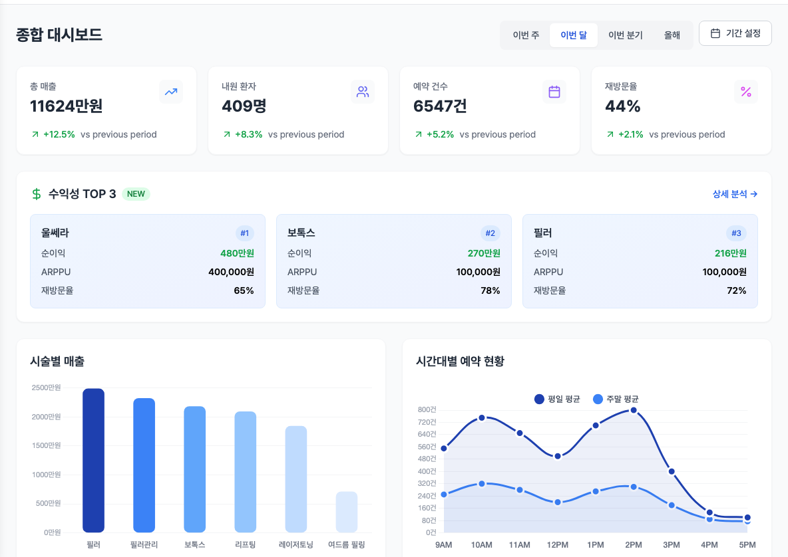
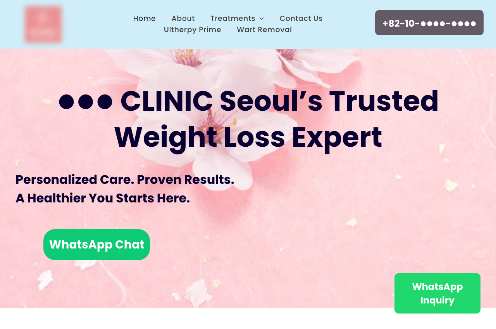

파닥파닥 개원의 세미나
AI 검색 시대의
병원 마케팅
개원 첫 1~2년, 마케팅 인프라를 어떻게 깔 것인가 · 검색 · AI · 원장 브랜딩 · 측정
발표자
전서연
데이터브릿지랩 대표
- 前 AWS 데이터 분석가
- Tableau Visionary 2026 · 국내 최초
- 현대자동차그룹 · KT · 하나은행 · CJ그룹 등 기업교육
- 병원 SEO · GEO · 마케팅 데이터 분석
2026년에 피부과를 개원한다면,
온라인에 무엇을 만들어야 할까
광고 얘기보다, 이 얘기부터 해보려고 합니다
전체 지도
매출 지표 트리 · 오늘의 전체 지도
개원하고 하는 모든 마케팅은 결국 이 트리의 칸 하나를 키우는 일입니다 · 오늘은 왼쪽 아래, 환자가 처음 들어오는 칸부터 위로 올라가겠습니다
Agenda
발표 구성
PART 1
이해
환자의 탐색 경로
검색 채널의 변화
AI가 병원을 찾는 방식
환자의 질문과 근거
PART 2
구축
개원 인프라
계정 · 지도 · 홈페이지
측정 도구 · 대행 계약
PART 3
운영
AI 답변 관측
검색어 → 행동 → 매출
신환 → 재방문
PART 4
확인
실제 사례
개원 전 · 90일 계획
내 병원 직접 점검
앞에서는 환자가 어디서 병원을 찾는지부터 봅니다 · 그다음에 개원할 때 뭘 만들어둬야 하는지, 실제 사례까지 보겠습니다
[ 01 ]
개원하면, 환자는
어디서 병원을 찾을까
환자 한 명
30대 직장인 · 기미 치료 고민
가상의 예시 · 실제 상담에서 반복적으로 듣는 경로
이름 재검색 · 후기
병원명 → 원장명 → 부작용
홈페이지 → 예약
글을 읽고 사람을 보고 결정
AI에서 병원 하나 보고 바로 예약하는 사람은 거의 없습니다 · 다시 검색하고, 원장도 보고, 후기도 보고 나서 예약합니다 · 오늘 보려는 게 이 사이입니다
블로그와 홈페이지는
예약 전 진료실입니다.
원장님을 만나기 전에 글부터 봅니다.
"여기는 내 문제를 어떻게 보는 병원이지?" 하고요.
신환 유입 확대 · 질문에서 예약까지 8단계
5
Consideration
병원명을 다시 검색하나
6
Validation
블로그 · 후기 · 원장 확인
방금 본 트리의 왼쪽 아래, 신환 유입 칸을 확대한 그림입니다 · 앞에서는 1~4(AI 안에서 생기는 일), 뒤에서는 5~8(병원에서 확인하는 일)을 봅니다
[ 02 ]
검색창이
여러 개가 됐다
트리 위치 : 신환 유입 · 채널
유입 경로 지도
환자가 병원을 처음 만나는 경로
겹치지 않게 나누고, 빠짐없이 · 초진 문진의 보기 항목이 이 지도에서 나옴
AI 검색
ChatGPT · Gemini · AI 브리핑
해외 환자
Google 검색 · 지도Reddit 등 커뮤니티의료관광 플랫폼AI 검색SNS
최근 늘어난 칸 : AI 검색 · 해외 · 지도 리뷰 — 전부 뒤에서 측정 방법까지 다룸
지도
지도 정보가 비어 있으면, 빈 채로 노출됩니다
구글맵 "강남역 피부과" 검색 결과 · 병원명 · 연락처 가림 · 2026.08 조회
Google Maps 검색 결과2026.08

- 별점 · 리뷰 수 · 영업시간 · 사진이 한 화면에
- 여기 정보가 비어 있으면 비어 있는 채로 노출
- 구글 AI 검색(AI 모드 · Gemini)은 위치 질문에서 이 지도 데이터를 참조
- 외국인 환자의 기본 탐색 화면
등록 · 관리 무료 · 개원 전에 만들 수 있음
네이버 안의 변화
네이버 검색도 예전 방식이 아닙니다
3,000만+
AI 브리핑 이용자
2026.04 기준
- AI 브리핑이 검색 최상단에서 여러 글을 요약 · 출처로 인용된 글만 노출
- 스마트블록 · 에어서치 · 검색 의도와 이용 이력에 따라 사람마다 다른 결과
- 같은 검색어라도 모두에게 같은 순위가 없음 → '몇 위 보장'이 성립하기 어려운 구조
출처 : 네이버 발표 보도 (2026.04) · 나스미디어 · 코드잇 네이버 알고리즘 분석
네이버의 답
광고 영역 vs AI 브리핑
"네이버에서 병원 블로그를 '상위노출 보장'하는 것은 현실적으로 불가능하며, 보장 약속을 하는 대행사는 사기 위험이 큽니다."
네이버 AI 브리핑 · '병원 블로그 상위노출 보장' 검색 결과 · 2026.08
네이버 AI 브리핑 답변search.naver.com

국내 검색
네이버 밖의 검색, 무시하기 어려운 규모
- 기관별 편차 있음 · 네이버 우위 통계도 존재
- 기관별 집계 방식에 따라 차이 있음
- 대행 상품 대부분은 여전히 네이버 한 곳만 다룹니다
출처 : StatCounter (2026.07) · 검색 리퍼럴 기준 통계로 실제 검색량 점유율과 차이가 있을 수 있음
StatCounter 한국 검색엔진 점유율2026.07

해외 환자
외국인 환자 3년 추이
해외 환자 주요 검색 채널 : Google · SNS · 의료관광 플랫폼 · AI
201만
2025년
집계 이후 최초 200만 돌파
- 2025년 201개국에서 방문 · 중국 · 일본 · 대만 · 미국 · 태국 순
- 중국 +137.5% · 대만 +122.5%
- 증가 요인 : 중국 무비자 · 미용·성형 부가세 환급 · K-뷰티
출처 : 보건복지부·한국보건산업진흥원 「2025년 외국인환자 유치실적」 (2026.04.24)
보건복지부 보도자료2026.04.24

[ 03 ]
AI는 병원을
어떻게 찾나
트리 위치 : 신환 유입 · AI 검색
순서를 바로잡으면
AI 검색과 기존 콘텐츠의 공통점
- 환자가 보던 기준 : 질문에 답하는가 · 누가 썼는가 · 근거가 있는가
- AI가 보는 기준 : 거의 같은 항목을 기계적으로 확인
- 키워드 반복 글은 환자에게도 AI에게도 같은 이유로 밀림
AI 검색에서는 그 차이가 답변과 인용 결과에서도 드러나기 시작합니다
순위와 인용
구글 상위 페이지 ≠ AI가 인용하는 페이지
20% 미만
구글 상위 페이지와 AI 인용 페이지의 일치율
온더AI 고객 데이터 분석 공개치
- 구글 1위 글이 챗GPT 답변에는 안 나오는 경우가 흔함
- 반대로 순위 낮은 글이 인용되기도 함 · 기준이 다르기 때문
출처 : Onthe AI 블로그 공개 자료 (2026) · 해당 업체 고객 데이터 기준
두 축
검색 순위 × AI 인용, 네 가지 조합
| 검색 상태 | AI 상태 | 해석 |
|---|
| 높음 | 높음 | 둘 다 강함 |
| 높음 | 낮음 | AI 인용 공백 · 근거 구조 점검 |
| 낮음 | 높음 | AI가 선호하는 근거가 존재 |
| 낮음 | 낮음 | 기반부터 개선 |
네이버·구글에서 잘 나온다고 AI에서도 잘 나오는 것이 아님 · 반대도 마찬가지
엔진별 차이
ChatGPT와 Gemini는 다른 곳을 봅니다
0개
두 엔진 Top 5 참고 도메인의 공통 도메인
병원 11곳 · 700개 질문 · 6,713개 응답 · 약 4만 인용 분석
5.1곳
질문 하나에 함께 등장하는 평균 병원 수
치과 관련 AI 인용 약 6만 건
- 챗GPT 하나만 검색해 보고 "우리 잘 나오네"로 판단할 수 없음
- 질문 하나가 곧 경쟁 병원 5곳과의 비교 화면
출처 : Onthe AI 블로그 공개 분석 (2026) · 해당 업체 데이터 기준
차단 정책
네이버 블로그 글은 AI가 원문을 읽지 못합니다
blog.naver.com/robots.txt 원문 · 2026.08 조회
네이버 블로그 robots.txt · AI 봇 차단 목록blog.naver.com/robots.txt

- GPTBot · OAI-SearchBot(챗GPT 검색) · PerplexityBot · ClaudeBot 전면 차단
- 주석 원문 : "AI 학습 · RAG 목적의 봇 접근을 엄격히 금지"
- 네이버 블로그에만 있는 글은 AI 답변의 원문 출처가 될 수 없음
- 인용되려면 자체 도메인 등 구글과 AI가 읽는 곳에 글이 있어야 함
네이버 안 노출용과 AI 인용용은 글을 두는 위치부터 다름 · 플랫폼 정책은 변경될 수 있음
다섯 단계
AI 답변에 병원이 등장하기까지
4
Recommendation
조건에 맞는 병원으로 제시
5
Representation
무엇이라고 설명하는가
어디에서 막혔는지에 따라 손댈 곳이 달라집니다 · 그래서 "AI에 나오나요?" 하나로 묶지 말고 단계별로 따로 봐야 합니다 · 커버한 질문 수 · 우리만 빠진 질문도 함께 기록
인용과 추천의 간격
글은 인용됐는데, 병원은 추천되지 않는 경우
일어나는 일
- ✕AI가 우리 칼럼을 출처로 읽음
- ✕그런데 추천 목록에는 다른 병원
- ✕글쓴이와 병원의 연결 정보가 약해서
필요한 연결
- ·저자명 ↔ 병원명 ↔ 전문 분야
- ·공식 프로필 페이지 ↔ 홈페이지
- ·구조화 데이터로 기계가 읽는 연결
칼럼이 인용되는 것과 병원이 추천되는 것은 별개 · 그래서 저자·병원 연결 구조를 함께 만듦
Representation
나오는 것보다, 어떻게 소개되는가
| 구분 | 예 |
|---|
| 병원이 원하는 설명 | "색소 진단을 세분화하는 원장" · "필요 없는 시술을 권하지 않는 병원" |
| AI가 실제로 한 설명 | "가격이 저렴한 피부과" · "보톡스 병원" |
| 확인할 것 | 사실인가 · 원하는 방향인가 · 어떤 출처 문서 때문에 그렇게 설명되는가 |
"색소 진단을 세분화하는 원장"을 원했는데 AI가 "가격이 저렴한 피부과"라고 소개하면 오는 환자가 달라집니다 · 설명을 바꾸려면 AI가 읽는 근거 문서를 바꿔야 합니다
2026년 GEO 점검 가이드도 인용 여부만이 아니라 답변 속 브랜드 표현의 정확성 확인을 권함 (Search Engine Land)
용어
SEO와 GEO의 차이
SEO · 검색 최적화
- ·목표 : 검색 결과의 순위
- ·단위 : 키워드 ("이수역 피부과")
- ·대상 : 네이버 · 구글 검색창
- ·참조 : 블로그 · 웹문서 목록
- ·지표 : 순위 · 클릭 수
GEO · 생성형 검색 최적화
- ·목표 : AI 답변 속 인용
- ·단위 : 환자의 질문 문장
- ·대상 : 챗GPT · 퍼플렉시티 · AI 브리핑
- ·참조 : 공식 홈페이지 · 구조화된 글
- ·지표 : 언급 여부 · 인용 출처
세 가지 경우
AI에 우리 병원을 물어보면 생기는 문제
문제 1
아예 안 나옴
원인 : 공개 정보 부족 · 경쟁 병원의 근거가 우세
문제 2
나오는데 정보가 틀림
원인 : 오래된 홈페이지 · 플레이스 · 외부 페이지
문제 3
병원은 나오는데 원장이 없음
원인 : 경력 · 논문 · 진료 기준이 검색 가능한 페이지에 없음
뒤에서 다루는 기술은 전부 이 세 문제의 해결 순서
[ 04 ]
환자의 질문은
어떻게 이어지는가
트리 위치 : 신환 유입 · 질문
연구 단위의 변화
키워드 연구에서 질문 연구로
키워드 연구
- ✕"기미 레이저" 검색량 · 순위
- ✕한 번의 검색어를 기준으로
- ✕대응 : 키워드별 글 발행
질문 연구 (Prompt Research)
- ·질문 → 조건 추가 → 비교 → 후속 질문의 연쇄
- ·환자가 실제로 묻는 문장을 목록화
- ·대응 : 질문마다 답이 되는 문서 준비 · 답변 관측
검색 업계는 prompt research를 SEO · GEO의 다음 연구 영역으로 다룸 (Search Engine Land, 2026)
질문 연쇄
기미 환자 한 명의 질문 다섯 개
1
증상
"30대인데 기미가 갑자기 심해졌어. 토닝부터 받아야 해?"
2
진료 방식
"기미랑 잡티를 구분해서 봐주는 피부과를 찾아야 해?"
3
조건
"전문의가 직접 보면서 과하게 권하지 않는 곳은?"
4
비교
"A의원과 B의원 중 색소 진료를 더 많이 보는 곳은?"
1~2번에는 병원명이 없고, 4~5번에서 병원명 · 원장명이 등장 · 단계마다 답이 되는 문서가 다름
질문 여정을 단계로 나누는 구분은 업계 프레임 (리드젠랩 공개 자료 : 증상 → 병원 탐색 → 특정 병원 확인)
질문 단위
환자 질문이 곧 콘텐츠 목록
콘텐츠 주제 출처 : 진료실에서 실제로 받는 질문
키워드 방식 (기존)
- ✕"이수역 피부과"
- ✕"기미 레이저"
- ✕"보톡스 가격"
같은 키워드에 수백 개 병원이 경쟁 · 글의 차이가 없음
질문 방식
- ·"기미랑 주근깨는 같은 레이저로 되나요"
- ·"레이저 토닝 후 붓기는 며칠 가나요"
- ·"수유 중인데 이 시술 받아도 되나요"
- ·"이 시술은 안 하는 게 낫다는 경우도 있나요"
질문을 쪼개면 그제야 원장님 얘기를 넣을 자리가 생깁니다 · "기미란 무엇인가"는 누가 써도 비슷하지만, "어떤 경우에 토닝부터 안 하는지"는 그 원장님만 할 수 있는 얘기입니다
질문 지도
환자 질문 지도 · "기미" 한 주제
증상 · 진단
기미인가 잡티인가
갑자기 진해진 이유
출산 후 생긴 색소
치료 선택
토닝이 맞는 경우
피코가 맞는 경우
IPL은 어떤 경우
안전 · 불안
더 진해질 가능성
색소침착(PIH)
임신 · 수유 중
생활 조건
결혼식 2주 전
여행 전
다운타임 없는 치료
의사 선택
피부과 전문의인가
누가 직접 시술하나
색소를 많이 보는가
비교
토닝 vs 피코
A병원 vs B병원
피부과 vs 관리샵
콘텐츠 계획
질문마다 공개 답변 있음 · 없음 체크
없는 질문이 다음 콘텐츠
기미 관련 콘텐츠 계획 예시 · 주제 하나에서 질문 30~50개 · 시술별로 같은 지도를 반복
질문 하나를 따라가면
이 질문에 답할 공개 정보가 있는가
- 원장 프로필 페이지
- 기미 치료에 대한 원장의 기준
- 실제 칼럼 · 홈페이지 안내
- 병원 밖 공개 페이지
"이렇게 하면 추천된다"가 아니라, 답의 재료가 존재하는가의 문제
AI 검색
이수역 근처에서 기미 상담받으려는데, 너무 강하게 시술하지 않는 곳 있을까?
색소 상태에 따라 접근이 다릅니다. ○○의원 김○○ 원장은 "이 정도 색소라면 처음부터 강하게 치료하지 않습니다"라고 설명합니다
출처.
원장 칼럼병원 홈페이지플레이스
[ 05 ]
AI가 참고할 근거는
어디에 있어야 하나
트리 위치 : 신환 유입 · 근거
출처의 범위
AI가 보는 것은 홈페이지 하나가 아닙니다
AI는 한 군데만 보는 게 아니라 이런 정보를 같이 봅니다 · 그래서 홈페이지만 잘 만들어서는 끝나지 않습니다
여섯 영역
검색과 AI가 읽는 병원 정보의 여섯 영역
공식 정보
병원명 · 주소 · 진료시간 · 의료진 · 진료과목
전문성 근거
전문의 · 경력 · 논문 · 학회 · 저자 프로필
진료 기준
무엇을 하는가 · 무엇은 안 하는가 · 어떤 환자에게 적합한가
제3자 확인
리뷰 · 기사 · 논문 DB · 학회 · 커뮤니티
위치 정보
지도 · 플레이스 · Google 비즈니스 프로필
콘텐츠
질환 · 시술 · 비교 · 회복 · 부작용 · 비용 · FAQ
중요한 건 이 정보들이 서로 다른 말을 하지 않는 것 · 여섯 영역이 같은 말을 할 때 검색과 AI가 같은 병원으로 인식합니다
AI 노출을 사이트 내부 최적화만이 아니라 entity 신호 · 외부 출처까지 함께 보는 접근 (Search Engine Land, 2026)
정보 일치
같은 병원인데 채널마다 정보가 다르면
GEO 하기 전에 이것부터 맞춰야 하는 병원도 많습니다
검색 경로
병원 검색 뒤에 이어지는 원장 검색
그래서 병원만 만들어 놓으면 안 되고, 원장도 같이 검색되게 만들어야 합니다 · 실제 비중은 문진 기록으로 확인 (상담에서 반복 관찰되는 패턴)
개원과 경력
개원 직후, 온라인에 있는 것과 없는 것
원장에게 실제로 있는 것
- ·전문의 · 대학병원 경력
- ·논문 · 학회 활동
- ·수천 건의 시술 경험
개원 직후 온라인에서 확인되는 것
- ✕병원명 · 주소 · 전화번호
- ✕그 외에는 거의 없음
개원 초기에 원장 프로필 페이지를 먼저 만들어야 하는 이유 · 경력은 옮겨 적어야 자산이 됨
실물
원장 정보는 한 URL에 모여야 검색됩니다
사례 병원의 영문 프로필 · 병원명 · 사진 가림
원장 프로필 페이지병원명 가림

- 전문의 자격 · 이력 · 진료 철학이 한 URL에
- 칼럼 · 논문이 저자 정보로 이 페이지와 연결
- 구조화 데이터로 기계도 같은 내용을 읽음
- 검색 · AI · 환자가 모두 이 페이지를 참조
경력만 잔뜩 적는 건 의미가 적습니다 · 이 원장님이 환자를 볼 때 뭘 중요하게 보는지가 보여야 합니다
같은 주제, 두 글
그 진료실에 원장이 없는 경우
평범한 대행 원고
- ✕기미의 정의
- ✕원인 · 증상
- ✕치료 방법 소개
- ✕주의사항
원장이라면 이렇게 말했을 글
- ·"이 정도 색소라면 처음부터 강하게 치료하지 않습니다"
- ·"환자분들이 가장 많이 오해하시는 부분은…"
- ·"이런 경우에는 오히려 시술을 권하지 않습니다"
왼쪽 글에 틀린 말은 하나도 없습니다 · 그런데 병원명을 가리면 어느 병원 글인지 알 수 없습니다
원장의 문장 · 1
대행 원고 검수 항목 ①
| 항목 | 글에 들어가는 형태 |
|---|
| 치료를 나누는 기준 | 같은 증상인데 방법이 달라지는 결정 변수 |
| 멈추는 기준 | 더 하지 않고 끝내는 지점 |
| 권하지 않는 경우 | 환자가 원해도 말리는 케이스 |
| 기대를 낮추는 지점 | 효과의 한계 · 회복 기간의 현실 |
원장의 문장 · 2
대행 원고 검수 항목 ②
| 항목 | 글에 들어가는 형태 |
|---|
| 절충 | 효과와 부작용 사이에서 무엇을 우선하는지 |
| 상담실 단골 질문 | 실제 질문과 원장의 실제 답 |
| 흔한 오해 | 환자가 잘못 알고 오는 것 |
| 단정하지 않는 부분 | 의료진도 확언하지 않는 영역 |
한 글에 적어도 두 가지는 들어가야 한다고 봅니다 · 하나도 없다면 그 원장님 글이라고 하기 어렵습니다
[ 06 ]
개원 초기에
먼저 만들어야 할 것
지금 만들어 두면 그대로 자산 · 나중에 고치려면 전부 재공사
세 가지
개원할 때 같이 만들어야 하는 것
병원 정보기본
- 병원명 · 주소 · 연락처
- 진료시간 · 진료과목
- 모든 채널에서 동일하게
원장 정보사람
- 이름 · 전문의 여부 · 경력
- 학회 · 논문 · 주 진료 분야
- 공개 프로필 페이지
콘텐츠기준
- 어떤 환자를 보는지
- 어떤 경우 권하지 않는지
- 상담실 단골 질문
병원 브랜드만 만들면 절반 · 원장 정보를 같이 만들어야 검색과 AI가 사람을 인식함
등록 화면
지도 · 프로필 등록은 개원 전에
두 곳 모두 무료 · 사업자등록 후 바로 등록 가능
Google 비즈니스 프로필 등록business.google.com

네이버 스마트플레이스 등록smartplace.naver.com

여섯 영역 중 '위치 정보'의 실물 · 이름 · 주소 · 진료시간을 홈페이지와 동일하게 · 이후 리뷰가 여기에 쌓임
비용 순서
개원 초기 마케팅비, 어디부터
먼저소유와 측정
- 도메인 · 계정 소유
- 플레이스 · 홈페이지 기본 구조
- 원장 프로필 · 유입 측정
확장고도화
- SEO · GEO 확장
- 다국어 · 해외 환자
- 외부 매체
광고비를 늘리기 전에 측정 구조 먼저 · 순서가 바뀌면 무엇이 효과였는지 알 수 없음
발주 전
홈페이지 계약 전에 확인할 것
개원 준비 중이라면 이 화면을 캡처해 업체 견적 단계에서 그대로 확인
| 영역 | 항목 |
|---|
| 소유 | 도메인 명의 · 관리자 계정 → 병원 보유 |
| 측정 | GA4 · 구글 서치콘솔 · 네이버 서치어드바이저 연결 |
| 검색 | sitemap · robots.txt · 대표주소(canonical) · HTTPS |
| AI | 텍스트 기반 페이지 · 구조화 데이터(JSON-LD) · AI 크롤러 차단 여부 |
| 확장 | 원장별 프로필 URL · 시술별 개별 URL · 다국어 구조 · 계약 종료 후 소스 · 콘텐츠 귀속 |
업체가 다섯 영역에 바로 답하지 못하면 그 자체가 판단 근거 · 세부 항목 목록은 QR 자료에
템플릿 사이트
아임웹 등으로 홈페이지를 만들 계획이라면
OpenAI 계열 봇 직접 접근 차단 · 일반 검색엔진은 정상 수집
ChatGPT에 링크 전달 시 403 Forbidden
- 플랫폼 차원의 보안 정책이라 사이트별 예외 설정이 어렵다
- 차단 대상은 GPTBot ChatGPT-User 등
- 구글·빙·네이버 등 일반 검색엔진은 정상 수집
출처 : 아임웹 고객센터 안내 · 플랫폼 정책은 변경될 수 있으므로 계약 전 현재 상태를 직접 확인하시는 것을 권합니다
대응 방법 4가지
- A. 기존 홈페이지에서 가능한 범위까지 개선
- B. 별도 콘텐츠 허브를 두고 홈페이지와 연결
- C. 홈페이지 제작 도구 자체를 변경
- D. 지금은 AI보다 네이버·플레이스를 우선
판단 근거 : 유입경로 기록
시장 현황
'상위노출 보장' 검색 결과
개원하면 가장 먼저 오는 연락이 이런 제안 · 검색어 : 병원 블로그 상위노출 보장 · 업체명 가림
네이버 검색 광고 영역 · "보장 · 100% 환불 · 월 10건 40만원~"2026.08

네이버 서치어드바이저 스팸 정책 원문공식 문서

왼쪽은 노출을 보장하고, 오른쪽에서 플랫폼은 그 수법을 제재 대상으로 명시 · 발행 건수를 파는 상품의 위치
책임
광고는 맡길 수 있지만, 책임은 맡길 수 없습니다
"계약을 통해 제3자에게 광고를 대행하는 것은 가능하나, 광고의 주체는 의료기관 개설자·의료기관의 장 또는 의료인이 되어야 하며, 계약에 따른 제3자 의료광고의 의료법 위반행위 책임은 의료인 등에게 귀속됩니다."
보건복지부 「치료경험담 등 불법의료광고 286건 적발」 보도참고자료 · 2022.04.18
보건복지부 보도자료2022.04.18

의료광고 책임 → 의료기관
다섯 가지
처음 대행사를 쓸 때 확인할 것
| 영역 | 확인 |
|---|
| 데이터 | 무엇을 측정해서 보고하는가 |
| 콘텐츠 | 누가 쓰고, 누가 검수하는가 |
| 기술 | 서치콘솔 · 사이트 권한을 병원이 볼 수 있는가 |
| 자산 | 계정과 콘텐츠가 계약 종료 후 병원에 남는가 |
| 법 | 의료광고 책임 구조를 이해하고 있는가 |
계약서 조항 · 가격 시세 · 인수인계 목록은 QR 자료에
공정거래위원회 보도 · 조사 55개사 중 18개사 조치언론 보도

[ 07 ]
검색어에서 재방문까지,
무엇을 재는가
트리 위치 : 유입 → 매출 연결 · 재진
질문 세트
키워드 순위표 대신, 질문 세트
질문마다 기록 : 언급 여부 · 몇 번째 · 경쟁 병원 · 출처 · 정보 정확성
우선순위
어느 질문에서 먼저 이길 것인가
넓은 질문
- ✕"강남 피부과 추천"
- ✕대형 병원 · 플랫폼과 정면 경쟁
- ✕개원 초기에는 등장 확률이 낮음
좁고 구체적인 질문
- ·"수유 중 색소 치료 상담이 되는 곳"
- ·"피부가 얇고 홍조가 있는 사람의 리프팅"
- ·진료 기준이 드러나는 질문 · 답하는 병원이 적음
우선순위 판단 : 시장 크기 × 우리 전문성 × 보유 콘텐츠 × 경쟁 강도 × 환자 가치
대표 시술의 넓은 질문보다 강점 시술 · 증상 질문을 나눠 기준선을 측정하는 접근 (리드젠랩 공개 자료)
측정 루프
GEO는 발행보다 관측이 먼저
업계 사례 : 48시간 주기 · 최대 200개 질문 모니터링 (Onthe AI 공개 자료) · 병원은 여기에 의료광고법 · 네이버 · 리뷰 · 다국어가 더해짐
관측 화면
관측은 일 단위 기록으로 쌓습니다
운영 초기 화면 · 2026.08 · 추적 검색어 28개 · Google Top 20 진입 2개 · 병원명 가림
GEO 모니터 일일 관측2026.08

월간 브리프 원장 전달본2026.08

오른 것이 없으면 없다고 적음 · 관측 결과가 다음 달 작업 목록을 정함
검색어 → 행동
환자 검색어와 행동 · 서치콘솔과 GA4
둘 다 무료 · 개원 때 연결해 두면 첫날부터 쌓임 · 계정 소유는 병원
서치콘솔 · 환자가 어떤 검색어로 들어오는가search.google.com/search-console

GA4 · 들어와서 무엇을 보는가 · 예약 페이지 도달marketingplatform.google.com

검색어(서치콘솔) → 행동(GA4) → 매출(문진 유입 기록 × 병원 장부 대조) 순서로 연결 · 네이버는 서치어드바이저가 같은 역할
측정의 변화
측정 방식의 변화
예전 측정 방식
검색→사이트 방문→클릭 집계
방문 수로 효과를 잴 수 있었습니다
지금 생기는 경우
질문→AI 답변에서 확인→방문 없음
병원을 알았어도 로그에는 남지 않습니다
보완책 : 초진 문진 유입경로 기록
유입 기록
개원 첫날부터, 두 가지만 기록
초진 문진표에 두 줄 · 첫 분기 데이터가 그대로 생김
Q1. 저희 병원을 처음 알게 된 곳은 어디인가요? (중복 선택)
네이버 검색플레이스 · 지도인스타그램유튜브
지인 추천커뮤니티 · 카페ChatGPT 등 AI간판기타
Q2. 예약 전에 어떤 곳을 더 확인하셨나요?
블로그홈페이지후기 · 리뷰유튜브AI에 다시 질문지도 · 사진
접수 체크 → 월 1회 집계 · "모름"도 기록 · 첫 접점과 확인 채널을 나누면 어디에 쓸지가 달라짐
재방문
재방문은 시술 주기 알림으로 만듭니다
상담 · 예약 · 유입 관리 도구 실제 화면 · 병원 특정 정보 가림
유입 퍼널 · 검색어 · 채널이 만든 문의와 예약app.mediboost.ai

케어 자동화 · 시술 주기별 알림 D+1 ~ D+150app.mediboost.ai

왼쪽 : 검색어 순위 → 문의 → 예약까지 연결 · 오른쪽 : 주기 알림 열람률과 재예약 · 기록 틀은 엑셀로 시작해도 됨
시각화
시술별 매출 1위와 순이익 1위는 다릅니다
앞의 지표 트리를 화면으로 구성한 예 · 예시 데이터
종합 대시보드 · 매출 · 내원 · 재방문율 · 수익성 TOP 3예시 데이터

시술별 매출 상세 · 환자 수 × 평균 단가 분해예시 데이터

엑셀 피벗으로 시작해도 구조는 같음 · 시술 믹스 판단의 근거는 매출이 아니라 순이익
기록
측정과 운영은 기록으로 보관
예시 · 한 병원의 문서 목록 · 계약서 · 점검 결과 · 진단 리포트 · 병원명 가림
보고서 자료실 · 고객별 문서 목록2026.08

- 계약서 · 점검 결과 · 진단 · 월간 브리프를 날짜 있는 파일로
- 업체를 쓰든 직접 하든 같은 원칙 · 구두 보고로 끝내지 않음
- 3개월 뒤 같은 질문("뭐가 달라졌나")에 문서로 답할 수 있게
아직 모르는 것
GEO에 대한 흔한 기대와 확인된 사실
| 흔한 기대 | 확인된 사실 |
|---|
| 한 번 캡처에 나오면 성과다 | AI 답변은 확률적 · 같은 질문도 매번 다름 → 반복 측정이 기본 |
| ChatGPT에 나오면 다 나온다 | 엔진마다 수집 경로 · 출처가 다름 · Gemini 결과와 불일치 |
| 인용되면 추천된다 | Citation ≠ Recommendation · 출처로만 쓰이고 추천에서 빠질 수 있음 |
| 추천되면 환자가 온다 | Recommendation ≠ 내원 · 재검색 · 확인 · 예약 단계가 남음 |
| AI 노출이 늘면 매출이 는다 | 장기 데이터 부족 · 직접 연결 근거는 아직 없음 |
| AI가 구글을 대체했다 | 대체 근거 없음 · 기존 검색과 병행되는 단계 |
AI 가시성 측정의 한계에 대한 업계 비판 (Search Engine Land, 2026) · 학계 리뷰(45개 연구)도 GEO를 확률적 과정으로 봄
[ 08 ]
실제 사례 ·
서울의 피부과
트리 전체를 한 병원에 적용한 기록 · 진행 중 · 병원명 비공개 · 전부 작업일지와 실제 화면 기준
시작 상태
네이버 블로그만 있던 병원
개원 후 여러 해가 지난 병원 · 논문 · 학회 · 방송 이력이 충분한 원장 · 오늘 말씀드린 인프라가 없던 상태
- 콘텐츠가 네이버 블로그에만 · 구글·AI에서는 찾기 어려움
- 블로그에는 지역 키워드만 많고 왜 이 원장인지는 드러나지 않음
- 영문 사이트는 대행사가 운영 · 원장 정보가 없는 범용 문구뿐
처음 검색해 봤더니
검색 결과에 없는 원장의 경력
서울의 한 피부과 · SCI 논문 · 학회 강연 11건 · 방송 자문 이력
경력이 없었던 게 아니라, 검색할 수 있는 형태로 존재하지 않았던 것
진단
수정보다 진단 먼저 · 12항목 점검
작업일지 2026-08-08 · 약 60개 페이지 조회 · 키워드 9개 노출 점유율 측정 · 경쟁 병원 비교
첫 진단 화면병원명 가림

- 보안 인증서 미설치
- 사이트맵이 죽은 옛 도메인을 가리킴
- 구조화 데이터 0개
- 방문 분석 미설치
- 원장 이력이 로그인 뒤에 잠김
우선순위
문제가 12개라면, 무엇부터
즉시막힌 것 풀기
- SSL · 대표주소
- 사이트맵 재생성
- 오래된 정보 수정
무조건 많이 고치는 게 아니라, 먼저 고칠 걸 고르는 것
홈페이지를 열어 보니
옛 주소를 가리키는 사이트맵
파일을 직접 열어 확인하고, 되돌릴 수 있게 전체 백업 후 단계별로 반영
점검 결과 원장 전달본병원명 가림

- 서치콘솔 · 애널리틱스 설치 (기존 미설치)
- 사이트맵 재생성 · 죽은 옛 주소 정리
- SSL · 대표주소 · 설명문 · 구조화 데이터 · llms.txt
- 원장 이력 · 진료 기준을 공개 페이지로
자료를 모아 보니
네 곳에 흩어진 경력 · 잠긴 답변 154건
이전 · 각자 따로
- ✕SCI 논문 → 학술 DB에만
- ✕학회 강연 11건 → 어디에도 없음
- ✕방송 자문 → 방송사 페이지에만
- ✕환자 답변 154건 → 로그인 뒤에 잠김
이후 · 하나의 프로필로
- ·공개 프로필 페이지에 이력 집약
- ·칼럼마다 저자 정보로 연결
- ·구조화 데이터로 기계도 읽게
그래서 글부터 쓰지 않고
원장의 기준부터 문서로 정리
브랜드 방향 검토 요청 · 원장 전달본 · 병원명 가림
브랜드 방향 정리 문서2026.08.17

- 홈페이지 · 블로그 · 칼럼에서 진료 철학 5가지 추출
- "진단이 먼저" · "피부만 보지 않는다" · "필요 없는 시술은 권하지 않는다"
- 추측한 항목은 사실 확인 요청으로 원장 검수
- 이 문서가 이후 모든 문구의 기준이 됨
그래서 처음부터 글을 쓰지 않았습니다 · 기준 없이 쓰면 병원마다 비슷한 글이 나옵니다
그다음, 글의 변화
같은 주제, 바뀐 글
BEFORE
- ✕"기미 치료란?"
- ✕정의 → 원인 → 치료 → 주의사항
- ✕어느 병원에 넣어도 같은 글
AFTER
- ·"기미가 있다고 무조건 토닝부터 하지는 않습니다"
- ·치료를 나누는 기준 · 권하지 않는 경우가 본문에
- ·저자 · 소속 · 프로필 연결
영문 사이트도 같은 문제
의사 정보가 없는 영문 사이트 · 전후
기존 사이트BEFORE

기존 : 범용 문구 · 원장 정보 없음 → 신규 : 원장 실명 · 전문의 자격 · 논문이 첫 화면 · 비용은 질문 단위 페이지 · 콘텐츠 저작권은 계약상 병원 귀속
커뮤니티 답변
AI가 인용하는 커뮤니티에 정보로 답했습니다
발견 : 외국인 환자는 병원 홈페이지보다 커뮤니티 질문에서 먼저 정보를 찾는 경우가 있음 · 실제 게시글 요지
reddit.com/r/Living_in_Korea
GLP-1 availability — 한국에서 약값이 어떻게 되나요? (거주 외국인)
병원 관계자임을 밝히고 답변 : 공개된 약값 · 여권만으로 진료 가능한 근거 · 반출 수량은 진료와 세관 규정에 따름. 미국 약값이 더 저렴한 경우도 함께 안내.
reddit.com/r/KoreaSeoulBeauty
How can a foreigner get Wegovy or Ozempic? (서울 방문 예정자)
외국인도 대면 진료 시 처방 가능 · 접수에 여권만 필요 · 두 약제의 허가 사항 차이를 정리. 외국인 처방 안내 페이지 링크 첨부.
홍보 문구 없이 정보만 · 이런 커뮤니티 글은 구글 상위에 자주 노출되고 AI 검색이 인용하는 출처
실물
가격 질문에는 페이지로 답합니다 · 계산기 · 일본어
발견 : 가격 질문은 칼럼보다 구조화된 페이지가 적합한 경우가 있음 · 병원명 가림
GLP-1 비용 계산기약제·용량·기간 → 총비용, 미국 자가부담가와 비교

일본어 페이지요금표 · 수진 흐름 · 다운타임

외부 출처
공식 홈페이지 밖의 공개 정보
발견 : 홈페이지 밖에서 저자와 소속이 확인되는 문서가 필요한 경우가 있음
- 종류 : 논문 DB · 학회 · 언론 기사 · 전문 칼럼 · 커뮤니티 답변 · 디렉터리 · 리뷰
- 생성형 검색은 통계 · 출처가 명시된 문서를 더 자주 인용 (GEO 연구, 2023)
- 공통 조건 : 저자 · 소속 표기 · 원문 링크 · 과장 없는 서술
- 오른쪽은 그중 하나인 칼럼 사이트 운영 예 · 4개 언어 · 저자 정보로 병원과 연결
실명 의사 칼럼 · 저자 · 소속 표기운영 예

채널이 무엇이든 기준은 동일 : 저자가 확인되고 출처가 명시된 공개 문서
개원 전
개원 전, 이 순서로 준비
D-60발주 전 결정
- 도메인 · 계정 병원 명의로 개설
- 홈페이지 업체에 기술 체크리스트 전달
- 원장 프로필 자료 정리 (경력 · 논문 · 기준)
D-30채널 세팅
- 플레이스 · 구글 비즈니스 등록
- 서치콘솔 · 서치어드바이저 연결
- 진료 영역별 페이지 초안
D-7운영 준비
- 문진표에 유입경로 항목
- 리뷰 응대 원칙 문서화
- 단골 질문 목록 → 첫 콘텐츠 주제
개원 후에 하려면 진료와 병행 · 개원 전이 가장 싸고 빠름
순서
개원 후 90일, 이 순서로
0–4주점검
- 계약서와 계정 소유 확인
- 유입경로 문진 시작
- 플레이스·홈페이지 정보 정리
4–8주기준 만들기
- 리포트 항목 합의
- 자주 받는 질문 목록화
- AI 자가점검 1회차 기록
8–12주확인
- 경로별 신환 수 집계
- 질문형 콘텐츠 발행
- 같은 질문으로 2회차 점검
실행
업체와 계약하기 전에, 30분만
- 네이버에서 병원명 검색
- 구글에서 "병원명" 검색
- 병원명 + 원장명 검색
- 서치콘솔 · 서치어드바이저 로그인
- 플레이스 진료시간 확인
- 챗GPT에 병원 질문
- 최근 블로그 글 3개 병원명 가리기
- 계약서 초안의 소유권 조항 확인
- 문진표에 유입경로 항목 넣기
- 이 결과를 들고 업체 상담 · 개원 전이면 홈페이지 발주 전에
[ 10 ]
우리 병원,
지금 직접 확인해 보겠습니다
실습 두 가지 · 약 10분
실습 1 · 콘텐츠
최근 블로그 글 3개를 열어 보세요
2
이름 가리기
병원 이름과 원장 이름을 손으로 가린다
3
확인
그래도 우리 병원 글이라는 것을 알 수 있는가
알 수 없다면, 그 글은 어느 병원에 갖다 놓아도 되는 글입니다
실습 2 · AI
AI에서 확인하는 네 단계
STEP 1추천되는지
- "○○동 (우리 진료과) 추천해줘"
- 우리 병원이 언급되는가
- 몇 번째로 나오는가
STEP 2정보가 맞는지
- "(우리 병원) 어떤 곳이야?"
- 진료시간·주소가 맞는가
- 없어진 시술이 남아 있지 않은가
STEP 3경쟁과 비교
- 같은 질문에 어느 병원이 먼저 나오는가
- 어떤 질문에서 우리가 비는가
STEP 4내 글이 인용되는가
- 최근 블로그 글 주제로 "○○동 (진료) 잘하는 곳?" 질문
- 그 글이 출처로 나오는가
- 네이버 블로그 글은 차단 정책상 인용 불가
오류 원인 대부분 : 플레이스 · 홈페이지 옛 정보
기록
점검 결과 기록 양식
| 질문 | 우리 병원 | 먼저 나온 곳 | 메모 |
|---|
| ○○동 (진료과) 추천 | 미언급 / 3번째 | A의원 | 후기 수가 많음 |
| (시술명) 잘하는 곳 | 미언급 | B의원 | 가격 안내 페이지 있음 |
| (우리 병원) 어떤 곳 | 정보 일부 오류 | - | 진료시간 옛날 정보 |
| (증상) 어디 가야 하나 | 미언급 | C의원 | 해당 질문 글 없음 |
미노출 질문 → 콘텐츠 후보
정리
다시, 지표 트리 · 오늘 다룬 칸
유입(채널 · AI · 질문 · 근거) → 기반(인프라) → 연결(검색어 · 행동 · 문진 · 장부) → 재진(리콜)까지 올라왔습니다 · 어느 칸부터 고칠지는 트리에서 비어 있는 칸이 정합니다
오늘의 정리
요약
- 탐색 · 환자는 한 번에 고르지 않음 · 예약 전 확인 단계가 존재
- AI 검색 · 순위 ≠ 인용 · 나오는가 다음은 무엇으로 설명되는가
- 질문 · 키워드가 아니라 질문 지도 · 좁은 질문부터
- 인프라 · 개원 첫날부터 계정 · 측정 · 원장 정보 · 문진 2문항
- 운영 · 같은 질문을 계속 보면서, 바꾼 뒤 정말 달라졌는지 확인
맞지 않는 경우
이 방식이 맞지 않는 병원
당장 이번 달 신환이 급한 병원광고가 먼저일 수 있습니다.
상위노출 몇 위를 보장받고 싶은 병원저희는 보장하지 않습니다.
원장의 생각이나 진료 기준을 콘텐츠에 드러낼 필요가 없다고 보는 병원저희 방식은 오히려 번거롭습니다.
검수할 시간을 전혀 내기 어려운 병원좋은 결과물을 만들기 어렵습니다.
회수
오늘 다르게 본 것
| 흔히 부르는 것 | 오늘 다르게 본 것 |
|---|
| 블로그 | 예약 전 진료실 |
| 콘텐츠 제작 | 원장 지식의 자산화 |
| GEO | 검색 가능한 공개 근거 |
| 다국어 | 진료 기준의 현지 언어화 |
| 모니터링 | 다음 행동을 정하는 판단 근거 |
신청 혜택
세미나 신청 혜택 · 리뷰 작성 시 전원 제공
Mediboost · 데이터브릿지의 병원 마케팅 브랜드 · 노출 · 순위 · 유입은 보장하지 않습니다
① 우리 병원 GEO 무료 진단
환자 질문별 AI 답변에서 우리 병원 노출 여부 · 경쟁 병원 비교 · 개선안 문서로 제공
② 네이버 글 5편, 인용 가능한 형태로
기존 네이버 글 SEO · GEO 최적화 후 구글 · AI가 읽는 자체 칼럼 사이트에 업로드
네이버 블로그에 갇힌 글을 구글 검색 · AI 답변에 인용될 수 있는 위치로 옮기는 작업 · 신청 폼에 병원명과 블로그 주소를 남기면 진단 결과를 메일로 보내드립니다

seoyeon924.github.io/mediboost-seminar/apply
환자가 예약 전에 만나는
그 글에, 원장님이 계신가요?
감사합니다 · Q&A

 ChatGPT
ChatGPT
 Gemini
Gemini
 Claude
Claude
 Perplexity
Perplexity